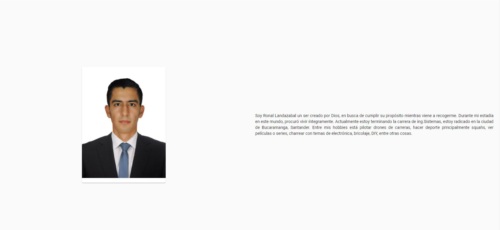
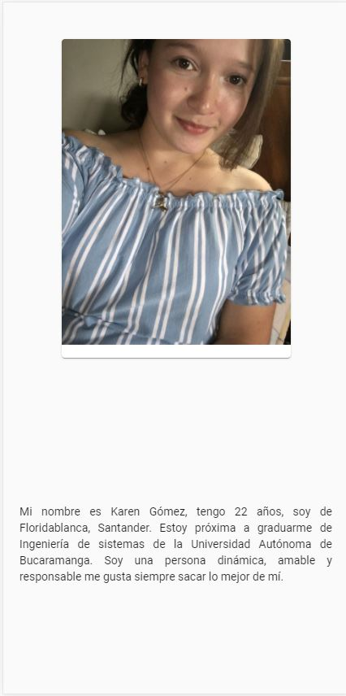

Equipo¶
Equipo en versión web
Equipo en versión movil
- Descripción
Este componente contiene una pequeña autobiografia de cada uno de los miembros del equipo desarrollador, junto con su foto, su nombre y el cargo actual.
- Importaciones
Para este componente se debe importar los módulos del cdk layout de angular denominados BreakpointObserver y Breakpionts para tener en cuenta los puntos de quiebre en la vista web y responsive y su respectivo Observable
import { BreakpointObserver, Breakpoints } from '@angular/cdk/layout';
- Desarrollo
Para el desarrollo de este componente se necesito el MatCard que permite agregar una imagen y un texto en este caso los datos del desarrollador dentro de un mat-grid, donde tenemos 2 columnas, una para cada mat-grid-tile el cual los impares contienen el mat-card y los pares la autobiografia.
1 2 3 4 5 6 7 8 9 10 11 12 13 14 15 16 17 18 19 20
<mat-grid-list [cols]="isMobile ? 1 :2 " rowHeight="1:1" class="card"> <!-- grid tile para cada elemento--> <!-- foto ronal --> <mat-grid-tile class="img" > <mat-card class="card-persona" fxFlex="0 0 50%"> <img mat-card-image src="../../../assets/ronal2.jpg"> </mat-card> </mat-grid-tile> <!--descripción ronal --> <mat-grid-tile> <p> Soy Ronal Landazabal un ser creado por Dios, en busca de cumplir su propósito mientras viene a recogerme. Durante mi estadía en este mundo, procuró vivir íntegramente. Actualmente estoy terminando la carrera de ing.Sistemas, estoy radicado en la ciudad de Bucaramanga, Santander. Entre mis hobbies está pilotar drones de carreras, hacer deporte principalmente squahs, ver películas o series, charrear con temas de electrónica, bricolaje, DIY, entre otras cosas. </p> </mat-grid-tile>